内容形式核心：先定义素材的视频创意体裁。
视频结构类型p00标签值：真人口播 / 多人剧情 / 沉浸式产品展示 / 直播切片 / AI数字人口播判断：单人真人讲解或种草=真人口播；两人及以上互动=多人剧情；无人/手部/纯产品=沉浸式。
上身效果、风格与穿搭种草 · 结构化标签、效果分析、Top素材创意标签与回看。
与箱包鞋靴使用同一套服饰创意标签语言，内容形式与画面客观要素优先。
视频结构、出镜角色、拍摄场景为核心标签，使用更深的蓝色卡片强调。
| 标签 | 消耗占比 | CTR | 3秒完播 | CVR |
|---|---|---|---|---|
| 真人口播 | 99.8% | 2.61% | 44.7% | 10.49% |
| 沉浸式产品展示 | 0.2% | 2.36% | 70.0% | 11.16% |
| 多人剧情 | — | — | — | — |
| 直播切片 | — | — | — | — |
| AI数字人口播 | — | — | — | — |
| 标签 | 消耗占比 | CTR | 3秒完播 | CVR |
|---|---|---|---|---|
| 单人女 | 99.4% | 2.61% | 44.7% | 10.49% |
| 单人男 | 0.3% | 1.43% | 37.9% | 9.6% |
| 无人出镜 | 0.2% | 2.36% | 70.0% | 11.16% |
| 标签 | 消耗占比 | CTR | 3秒完播 | CVR |
|---|---|---|---|---|
| 居家室内 | 60.8% | 2.83% | 45.4% | 9.32% |
| 户外街景 | 21.1% | 2.37% | 39.8% | 9.77% |
| 商场门店 | 18.1% | 2.16% | 48.0% | 15.27% |
| 标签 | 消耗占比 | CTR | 3秒完播 | CVR |
|---|---|---|---|---|
| 颜值种草 | 50.4% | 2.46% | 47.4% | 10.23% |
| 功能实测 | 46.7% | 2.78% | 43.0% | 10.64% |
| 场景痛点 | 1.6% | 3.17% | 33.6% | 11.25% |
| 信任背书 | 1.2% | 1.23% | 15.9% | 14.28% |
| 标签 | 消耗占比 | CTR | 3秒完播 | CVR |
|---|---|---|---|---|
| 显瘦修饰 | 48.6% | 2.45% | 47.9% | 10.34% |
| 核心卖点展示 | 34.0% | 2.47% | 44.2% | 11.81% |
| 显腿长 | 10.9% | 3.85% | 39.3% | 7.6% |
| 显瘦显高 | 1.8% | 2.87% | 33.5% | 7.73% |
| 省心搭配 | 1.6% | 3.17% | 33.6% | 11.25% |
| 亲肤安全 | 1.2% | 1.23% | 15.9% | 14.28% |
| 防晒透气 | 0.7% | 2.85% | 35.7% | 4.47% |
| 舒适贴合 | 0.5% | 1.89% | 38.9% | 7.43% |
| 速干透气 | 0.3% | 1.43% | 37.9% | 9.6% |
| 吸汗透气 | 0.2% | 2.36% | 70.0% | 11.16% |
| 亲肤舒适 | 0.1% | 1.75% | 20.6% | 0.0% |
| 保暖轻量 | 0.0% | 1.18% | 47.8% | 1.53% |
| 标签 | 消耗占比 | CTR | 3秒完播 | CVR |
|---|---|---|---|---|
| 身材焦虑自信种草 | 60.0% | 2.7% | 46.3% | 9.82% |
| 结果导向 | 34.0% | 2.47% | 44.2% | 11.81% |
| 美女吸睛 | 1.8% | 2.87% | 33.5% | 7.73% |
| 省心决策 | 1.6% | 3.17% | 33.6% | 11.25% |
| 家长关怀 | 1.2% | 1.23% | 15.9% | 14.28% |
| 夏日出行 | 0.7% | 2.85% | 35.7% | 4.47% |
| 运动挑战 | 0.3% | 1.43% | 37.9% | 9.6% |
| 促销紧迫感 | 0.2% | 2.36% | 70.0% | 11.16% |
| 舒适治愈 | 0.1% | 1.75% | 20.6% | 0.0% |
| 冬季保暖 | 0.0% | 1.18% | 47.8% | 1.53% |
| # | 细分类目 | 素材数 | 消耗占比 | CTR | 3秒完播 | CVR |
|---|---|---|---|---|---|---|
| 1 | 上衣 | 203 | 48.6% | 2.45% | 47.9% | 10.34% |
| 2 | 裤子 | 91 | 10.9% | 3.85% | 39.3% | 7.6% |
| 3 | 裙子 | 21 | 1.8% | 2.87% | 33.5% | 7.73% |
| 4 | 套装/学生校服/工作制服 | 21 | 1.6% | 3.17% | 33.6% | 11.25% |
| 5 | 儿童内衣裤袜 | 7 | 1.2% | 1.23% | 15.9% | 14.28% |
| 6 | 奶奶装 | 11 | 1.1% | 2.0% | 40.4% | 3.94% |
| 7 | 防晒衣/皮肤衣 | 8 | 0.7% | 2.85% | 35.7% | 4.47% |
| 8 | 文胸/乳贴/内裤 | 3 | 0.5% | 1.89% | 38.9% | 7.43% |
| 9 | 休闲鞋 | 4 | 0.5% | 1.9% | 37.4% | 5.1% |
| 10 | 速干衣裤 | 2 | 0.3% | 1.43% | 37.9% | 9.6% |
每条素材的标签均采用行业类目创意基线；标为关键帧人工核验的素材会覆盖基线标签。后续可持续补充逐帧画面和人工校正。
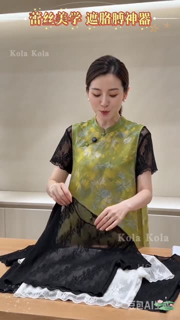
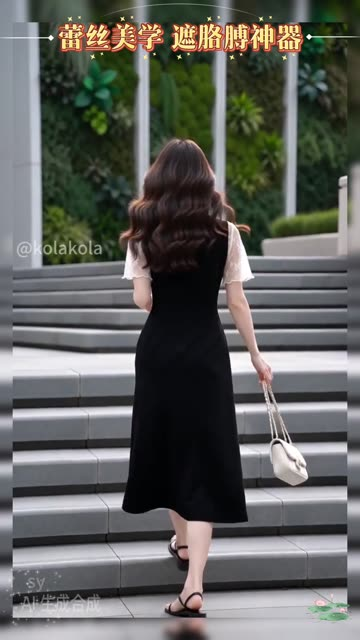
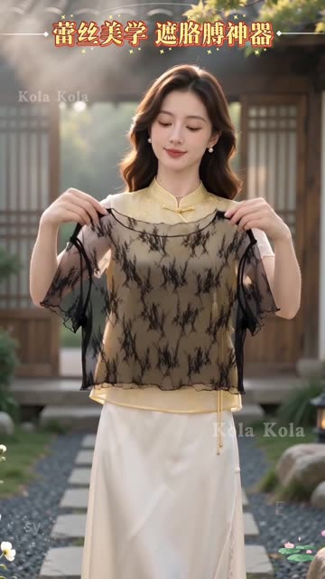
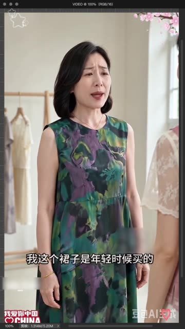
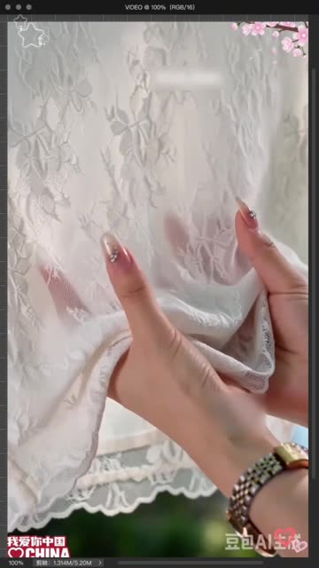
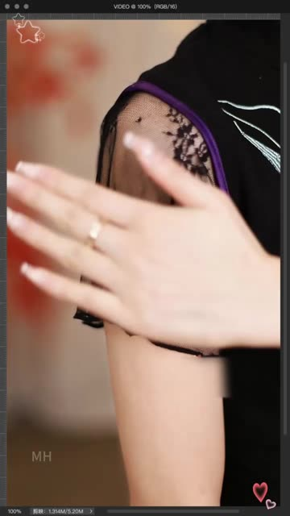
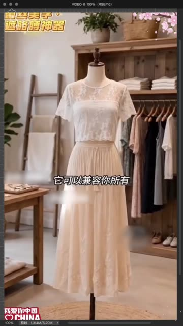
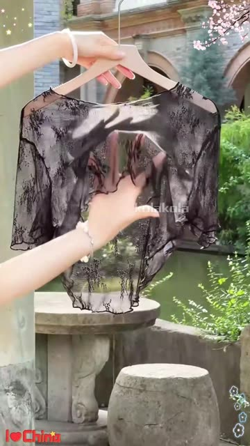
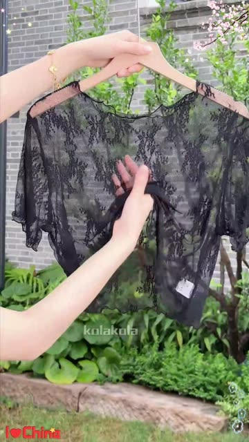
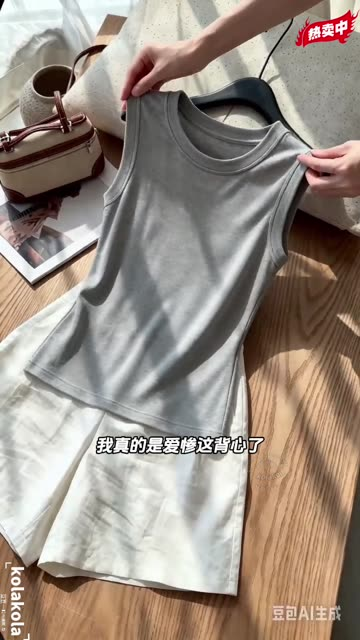
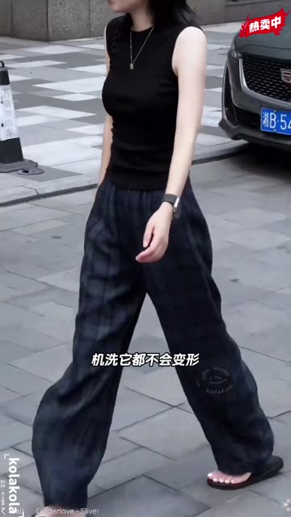
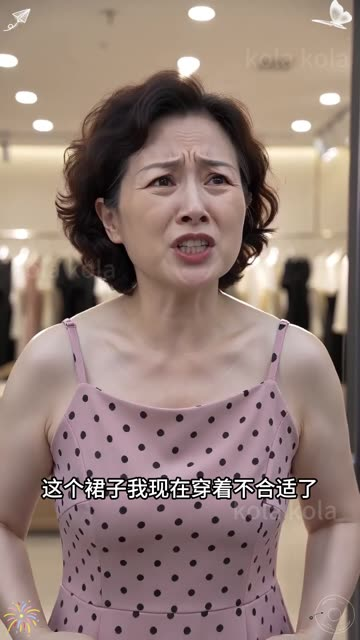
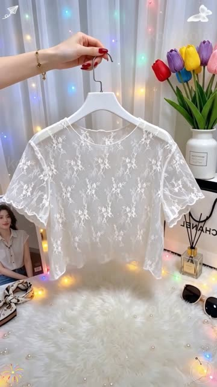
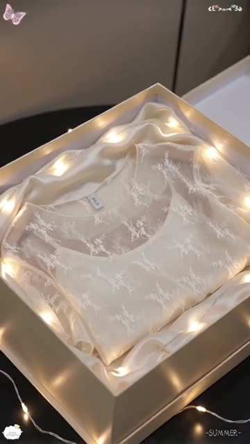
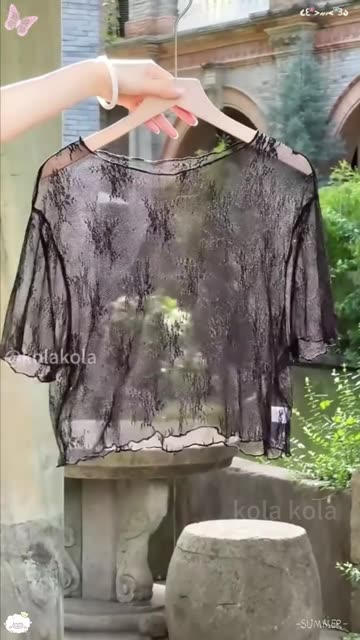
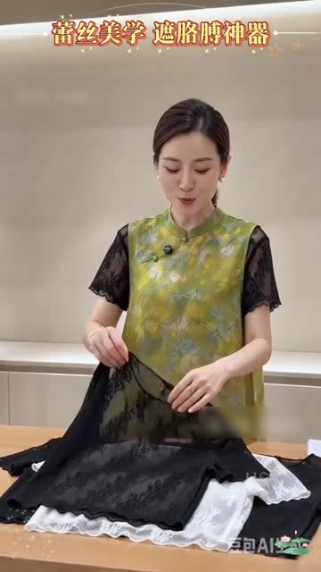
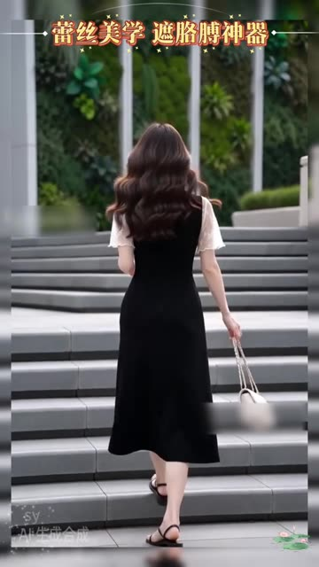
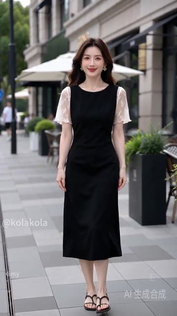
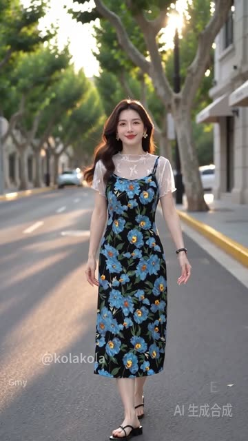
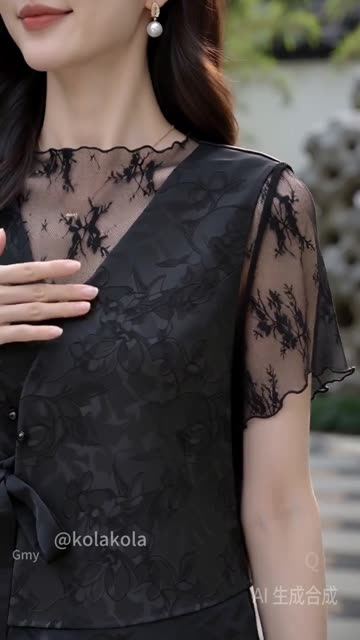
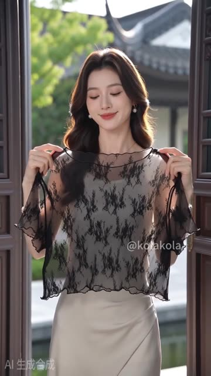
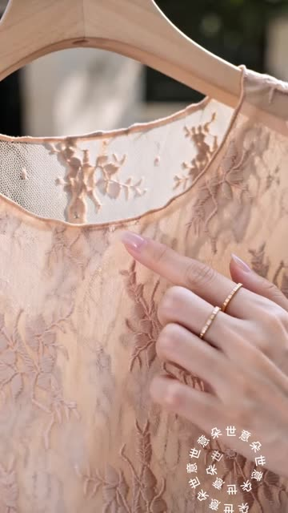
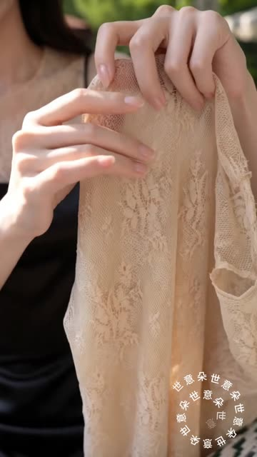
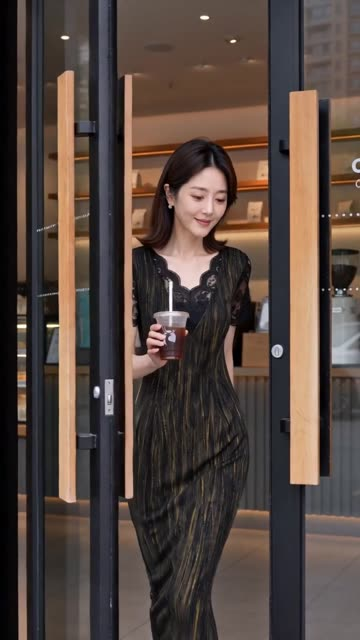
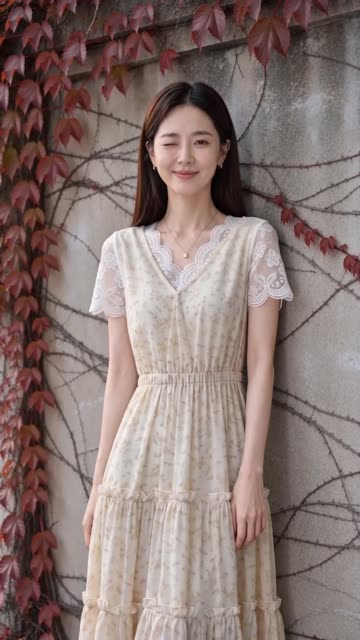
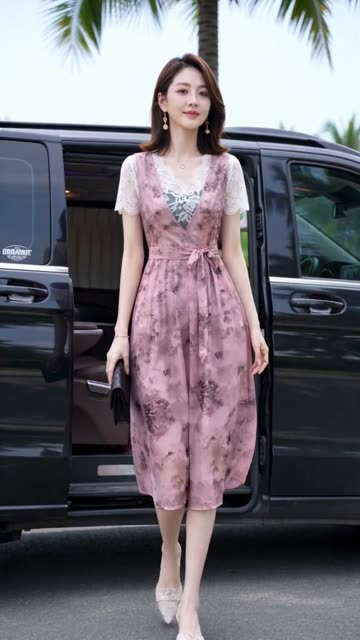